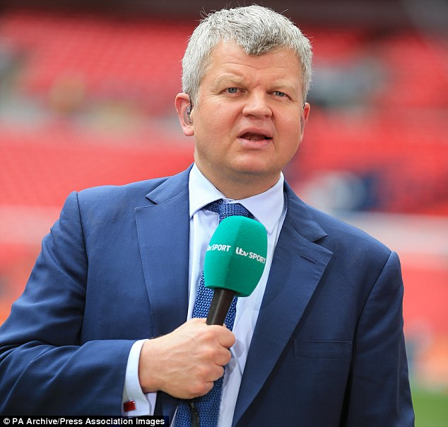

Saturday, December the 24th, 2016
back to: title, date or indexes
I am grateful to reader Theo Gott, who reminded me of this seasonal squib which originally appeared here six long years ago.

The television presenter Adrian Chiles read the newspaper headline Porpoises rescue Dick Van Dyke and was consumed by jealousy. Ever since he was tiny, Chiles had hankered to feature in an exciting news story alongside sea creatures, and now his thunder had been stolen by the octogenarian pretend chimney-sweep! It was too much to bear.
Yet, rather than turning his twisted mental havoc upon Dick Van Dyke, the West Bromwich Albion-supporting anchorman began to plot vengeance against the very sea creatures which until now had fascinated him. In his mania, he decided to obliterate the largest sea creature he could obtain, to obliterate it in the most disgusting way, by eating it. And he decided to make of his revenge a festive occasion, by arranging his foul dinner to take place on the day when we celebrate the birth of Jesus Christ.
What demons swept through his maddened mind, to so finesse his unutterable act? Alas, no hint was given of his motives in the newspaper report which followed, in the cheaply-photocopied Weekly Cetacean News Roundup, under the headline A Whale's Christmas In Chiles.
Hooting Yard on the Air, December the 6th, 2010 : “Cetacean News Roundup” (starts around 00:12)